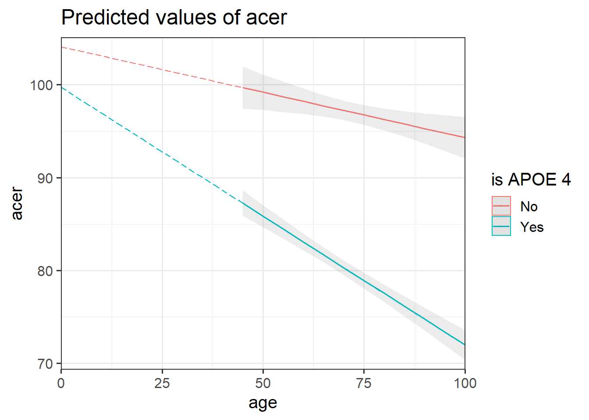
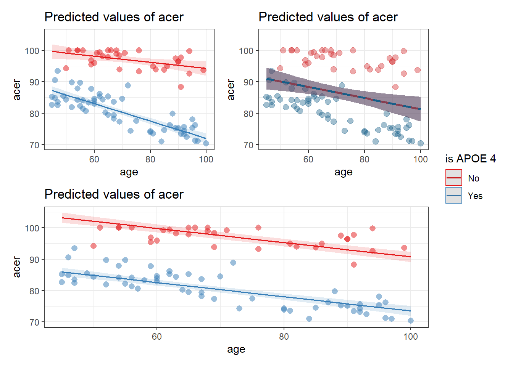

| variables | description |
|---|---|
| pid | Participant ID |
| age | Age (in Years) |
| educ | Years of Education |
| birthweight_kg | Birthweight (in Kg) |
| apoe4 | APOE-4 Gene expansion ('none', 'apoe4a', 'apoe4b', apoe4c') |
| acer | Score on Addenbrooke's Cognitive Examination |
Week 9 Exercises: Interactions and Categorical Predictors
Aging Cognition
Data: cogapoe4.csv
Ninety adult participants were recruited for a study investigating how cognitive functioning varies by age, and whether this is different depending on whether people carry an APOE-4 gene.
Research Question: Does the relationship between age and cognitive functioning differ between those with and without the APOE-4 genotype?
The data are available at https://uoepsy.github.io/data/cogapoe4.csv.
Question 1
Does the relationship between age and cognitive functioning differ between those with and without the APOE-4 genotype?
Read in the data and explore the variables which you think you will use to answer the research question above (create some plots, some descriptive stats etc.)
handy functions:
- The
pairs.panels()function from the psych package is quite a nice way to plot a scatterplot matrix of a dataset.
- The
describe()function is also quite nice (from the psych package too).
Question 2
Check the apoe4 variable. It currently has four levels (“none”/“apoe4a”/“apoe4b”/“apoe4c”), but the research question is actually interested in two (“none” vs “apoe4”).
Make a new variable that indicates whether or not someone has the APOE4 genotype.
Hints:
- One way to do this would be to use
ifelse()to define a variable which takes one value (e.g., “NO”) if the observation meets from some condition, or another value (e.g., “YES”) if it does not. You can use it to add a new variable either insidemutate(), or usingdata$new_variable_name <- ifelse(test, x, y)syntax.
Question 3
Does the relationship between age and cognitive functioning differ between those with and without the APOE-4 genotype?
To answer this question, do you need an interaction? If so, between what kind of variables (continuous x continuous, continuous x categorical, or categorical x categorical)?
Hint:
- See 9A#it-depends
Question 4
Especially for this type of interactions, we can start to get a sense of things by plotting the data and having a separate facet for each group.
Produce a visualisation of the relationship between age and cognitive functioning, with separate facets for people with and without the APOE4 gene.
Hint:
- remember
facet_wrap()?
Question 5
Does the relationship between age and cognitive functioning differ between those with and without the APOE-4 genotype?
Fit a model to answer this research question.
Hint:
- for how to fit interactions, see 9A#fitting-interactions-in-r
Question 6
Looking at the coefficient estimates from your model, write a description of what each one corresponds to on the plot shown in Figure 1 (it may help to sketch out the plot yourself and annotate it).

The dotted lines show the extension back to where the x-axis is zero
Some options for you to choose from:
- The point at which the blue line cuts the y-axis (where age = 0)
- The point at which the red line cuts the y-axis (where age = 0)
- The average vertical distance between the red and blue lines.
- The vertical distance from the blue to the red line at the y-axis (where age = 0)
- The vertical distance from the red to the blue line at the y-axis (where age = 0)
- The vertical distance from the blue to the red line at the center of the plot
- The vertical distance from the red to the blue line at the center of the plot
- The slope (vertical increase on the y-axis associated with a 1 unit increase on the x-axis) of the blue line
- The slope of the red line
- The adjustment to the slope when you move from the blue to the red line
- The adjustment to the slope when you move from the red to the blue line
Question 7
Produce a visualisation of the estimated interaction.
Hints:
- e.g. plot your model!
- see 9A#visualisation
Question 8
Write a short paragraph explaining the pattern of results, including coefficient estimates as appropriate.
Question 9
It’s important to emphasise that models are structures that we design, then estimate from our data, and assess how well they fit.
Here are three models:
cogapoe$isAPOE4 = ifelse(cogapoe$apoe4 == "none", "No", "Yes")
apoe4mod1 <- lm(acer ~ 1 + age, data = cogapoe)
apoe4mod2 <- lm(acer ~ 1 + age + isAPOE4, data = cogapoe)
apoe4mod3 <- lm(acer ~ 1 + age + isAPOE4 + age:isAPOE4, data = cogapoe)And below are those three models plotted, with the data added.
Which model corresponds to which plot?

Seasonal Extraversion
USMR 2022 Data
The data from the USMR 2022 survey (now closed) can be found at https://uoepsy.github.io/data/usmr2022.csv.
note, this is the survey data just from USMR this year, not other students on other courses or in previous years
Question 14
We want to make a variable that indicates what season each person was born in.
We have seen the ifelse() command a few of times now, but something we are yet to see is that we can have nested statements. So we could turn everybody’s birth-months into a season by doing something like the below, where we ask “if it’s january then it’s winter, else if it’s february then it’s winter, else if it’s march…” and so on.
usmrdata <- read_csv("https://uoepsy.github.io/data/usmr2022.csv")
usmrdata %>% mutate(
season = ifelse(birthmonth == "jan", "winter",
ifelse(birthmonth == "feb", "winter",
ifelse(birthmonth == "mar", "spring"
ifelse( .....
)We can make this a little more efficient by use of the %in% operator, which allows us to ask “if it’s one of [december, january, february] then it’s winter, else…”.
usmrdata %>% mutate(
season = ifelse(birthmonth %in% c("dec","jan", "feb"), "winter",
ifelse(birthmonth %in% c("mar","apr","may"), "spring",
...
...
)Complete the code above in order to make a column that assigns the correct birth-season based on their month of birth.
Hints:
- you don’t have to write out the last “if”, because you can capture those in the final “else” bit.
- if you want a more tidyverse way to do this then look up the help docs for the
case_when()function.
Question 15
Make the season variable that you just created a factor.
We would like you to do the following, in order:
- fit a model
lm(extraversion ~ season), and assign it the nameseasonmod1.
- relevel the season variable to have “spring” as the reference level.
- fit the same model, this time assigning it the name
seasonmod2 - set the contrasts for the season variable to be “sum contrasts”
- fit the same model, this time assigning it the name
seasonmod3
Hints:
- for relevelling factors, we’ve seen this in 9A#getting-more-from-your-model.
- for “sum contrasts” and how to set them, see 9B#sum-contrasts.
Question 16
Calculate the mean extraversion of people born in each season. From these, also calculate the mean of those four means.
Hints:
- you can use the
data %>% group_by %>% summariselogic here.
- to calculate a mean of means, how about
data %>% group_by %>% summarise %>% summarise!
Question 17
Because there aren’t any other predictors in our model, our coefficients from all three models we fitted in question 15 are going to be various comparisons between the numbers we calculated in question 16
For every coefficient estimate in the three models, write down what difference it is estimating, and check it against the numbers you calculated in question 16
coef(seasonmod1) (Intercept) seasonspring seasonsummer seasonwinter
26.117647 4.174020 7.132353 3.609626 coef(seasonmod2) (Intercept) seasonautumn seasonsummer seasonwinter
30.2916667 -4.1740196 2.9583333 -0.5643939 coef(seasonmod3)(Intercept) season1 season2 season3
29.8466466 0.4450201 -3.7289996 3.4033534